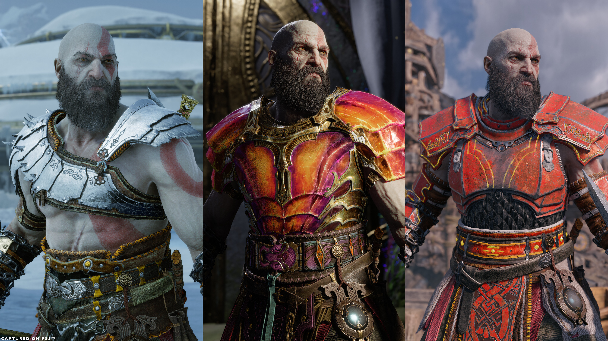
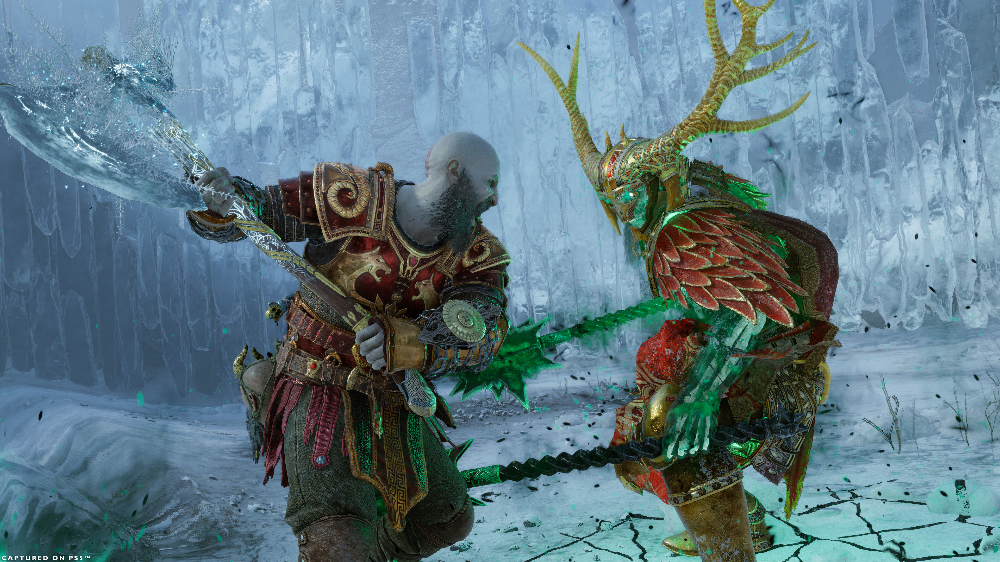

Embárcate en un épico y cordial viaje mientras Kratos y Atreus luchan por aferrarse y soltar
Desde Santa Monica Studio llega la secuela del aclamado por la crítica God of War (2018). Fimbulvetr ya está en camino. Kratos y Atreus deben viajar a cada uno de los nueve reinos en búsqueda de respuestas, mientras que las fuerzas asgardianas se preparan para una batalla profetizada que terminará con el mundo. En el camino explorarán paisajes increíbles y míticos, y se enfrentarán a aterradores enemigos en la forma de dioses nórdicos y monstruos. La amenaza del Ragnarök cada vez está más cerca. Kratos y Atreus deben elegir entre su propia seguridad y la seguridad de los reinos.
Apariencia de las armaduras
¡Para los que queráis jugar con estilo, hemos añadido nuevas combinaciones de colores y nuevos diseños hasta ahora no disponibles a 13 de nuestras armaduras existentes! Esas apariencias pueden comprarse en la tienda de los hermanos Huldra y aplicarse a cualquier armadura que tengáis con un nivel superior a 9 desde el menú del transformador. La nueva apariencia de armadura de berserker puede adquirirse al derrotar al rey de los berserkers en Nueva partida +.

Nuevo nivel máximo
En Nueva partida +, tanto Kratos como vuestros enemigos tendrán el nivel máximo aumentado y se volverán más poderosos. Podréis convertir vuestras piezas de equipo de nivel 9 (armadura, armas, componentes de armas y escudos) en nuevas versiones “Plus” que otorgarán niveles de progreso adicionales. ¡Además, al convertir vuestro equipo recibiréis una moneda de oro con la que podréis comprar uno de los nuevos encantamientos en la tienda! También hemos dado una mejora a la tienda para que podáis comprar y vender recursos progresivamente. ¡Comprar y vender materiales para que tengáis vuestro equipo a punto para la Nueva partida + será pan comido!
Jefes finales

¿Os pareció fácil luchar contra las almas berserker y Gná, la reina valquiria? Nos hemos asegurado de introducir algunos cambios en las luchas opcionales más difíciles de Nueva partida +, así que, aunque ya las hayáis derrotado antes, supondrán un gran reto cuando os las volváis a encontrar.
Si quieres enterarte un poco màs sobre God of War: Ragnarok !Haz Click Aqui¡